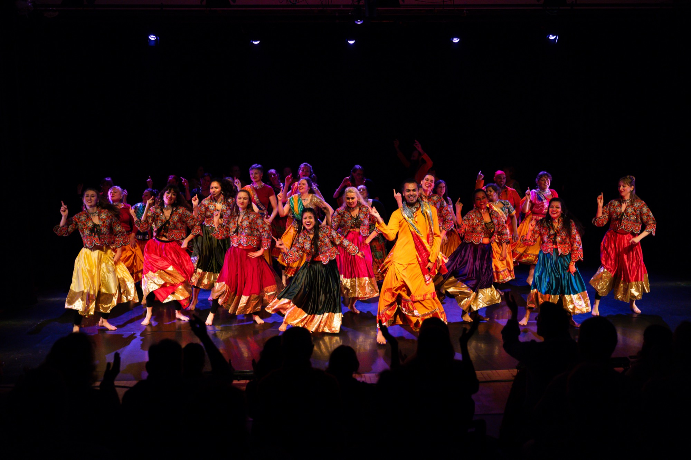
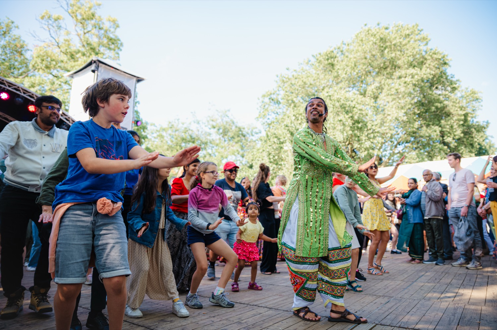

Workshops
One tradition, one teacher
Master teachers from across India, each carrying a single folk or classical form — taught hands-on across the weekend. Past editions have spanned Kalbeliya, Chhau, Giddha, Lavani, Kuthu, Garba and more.

Every May · Ghent, Belgium
Come celebrate Indian dance with us — in the heart of Europe.
What is GIDF
Indian dance is not one thing.
It is Kalbeliya from the desert of Rajasthan. Chhau from the tribal heartlands of Odisha. Lavani from Maharashtra. Kuthu from Tamil Nadu. Giddha from Punjab — each with its own history, its own community, its own way of moving through the world.
Every May, GIDF brings these traditions to Ghent — not as performance alone, but as experience. You learn from teachers who carry these forms in their bodies. You dance, you watch, you celebrate with a live band until late. You leave knowing something you didn't before.
Three days. Master teachers from across India. One community that keeps coming back.
Curated by Swapnil Dagliya · Organised by ABC a Bollywood Company
Shoonya Dance Centre, Ghent

What to expect
Every edition is built from the same parts — workshops by day, a gala by night, a party to open it all, and the small rituals that hold a community together.
Workshops
Master teachers from across India, each carrying a single folk or classical form — taught hands-on across the weekend. Past editions have spanned Kalbeliya, Chhau, Giddha, Lavani, Kuthu, Garba and more.

Gala Showcase
A seated showcase on the Shoonya stage — faculty, guest artists, and the ABC company together, lights down, full theatre. The festival's big night.

Opening Party
A community dance class, live music, and a DJ until late — with Indian food and drink. All levels, all ages welcome to open the festival together.
Community rituals
A short morning warm-up to start each day grounded, together.
The mid-session break — chai, conversation, and catching your breath.
The closing circle on the final day. However it began, we end together.

The next edition
Faculty, the full programme, and tickets are announced one edition at a time — and Instagram is where it all goes live first. Follow along so you don't miss the dates.
Follow @gentindiadansfestivalPractical
The essentials that stay true edition to edition. Dates, faculty and prices are confirmed each year — everything else below is how GIDF always runs.

Shoonya Dance Centre, Stapelplein 41, 9000 Gent. The whole festival unfolds under one roof — studios, stage, and party.
All levels and backgrounds, ages 12+. No prior Indian-dance experience needed — just come ready to move.
A 10-minute walk from Gent-Dampoort station. Street parking out front, Dok Noord parking five minutes away, and the city centre ten minutes on foot.
Our dance floors are danced barefoot or in socks. Some folk workshops use a long, flowing skirt — bring your own; a few are available to borrow, first-come.
Snacks and drinks at the opening party, and a simple lunch (soup & sandwiches, veg and vegan) on workshop days. Outside food and drink isn't permitted, water aside.
Find hotels via visit.gent.be, or ask in the festival's Facebook group for shared accommodation with other dancers.
Registration opens ahead of each edition and closes once we're full. All registrations and tickets are non-transferable and non-refundable.
Write to info@shoonyadance.com (Mon–Fri, 10:00–18:00). For news and announcements, follow @gentindiadansfestival.
Past editions
Ghent's annual festival of Indian dance — workshops, showcases, an opening party, a city brought into the rhythm. Since 2023.
"Gent India Dans Festival has always been about creating a space for Indian dance that feels thoughtful, grounded, and honest." Not rushed. Not overproduced. Not reduced to trends. — Swapnil, December 2025
From Bharatanatyam to BollyHop, from Punjab's Bhangra to Bengal's Kathak — the festival's proposition, made on day one: Indian dance in its full breadth, not narrowed to a single school.
A precision form rarely taught in Belgium joined the line-up. The year the festival aimed deeper, not just wider — and learned its first lessons in international logistics.
The first community class opened the festival up to new people. A year of choosing essence over trend — the community class stayed; the competitions didn't. And Shampa, kept away by a visa the year before, finally taught.
For the first time, live music was on the festival stage — tabla on the workshop floor and a live band at the opening party. A new four-hour deep-dive format joined the weekend, and the Gala Showcase sold out.